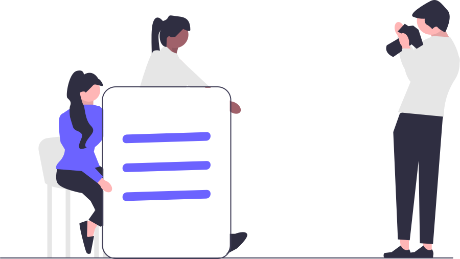
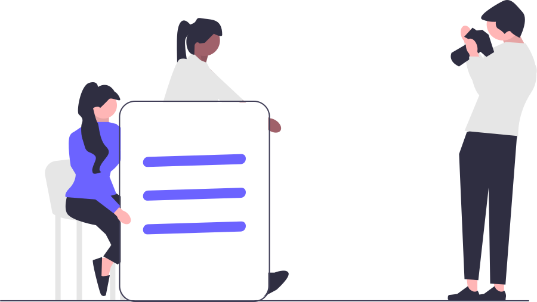

What is the software life cycle?


The software life cycle is a set of stages that software development goes through from inception to completion. The software life cycle refers to the processes and phases involved in the creation and delivery of software, including: requirements gathering and analysis, design, implementation, testing, deployment and maintenance. The goal of the software lifecycle is to ensure that software is developed efficiently, effectively and to the highest quality standards.
Communication stage


The "Communication" stage in the software life cycle refers to the process of exchanging information and feedback between the development team, stakeholders, and customers to ensure that the software being developed meets their needs and expectations. It typically involves regular meetings, presentations, demos, and documentation to ensure that everyone is aligned on the project's goals and progress.
System requirements stage
 

The "System Requirements" stage in the software life cycle is the process of gathering, analyzing, and defining the specific needs, goals, and expectations of the stakeholders and customers for the software being developed. This stage typically involves conducting research, evaluating current systems, holding discussions with stakeholders and users, and creating a detailed document that outlines the functional and non-functional requirements of the software. The outcome of this stage is a clear understanding of what the software should do and how it should perform, which serves as a blueprint for the subsequent design and development stages
Feasibility study stage


The "Feasibility Study" stage in the software life cycle is the process of evaluating the potential success and viability of a software project. It involves analyzing various factors such as technical feasibility, financial viability, market demand, and the availability of resources. The goal of this stage is to determine whether the proposed software project is worth pursuing, and to identify any potential roadblocks or challenges that might impact its success. This stage typically involves conducting research, gathering data, and creating a report that summarizes the findings and makes recommendations for moving forward. The outcome of the feasibility study helps stakeholders make informed decisions about whether to invest in the project and what resources will be required to bring it to fruition.
System analysis stage


The "System Analysis" stage in the software life cycle is the process of evaluating and understanding the current system, its components, and the processes it uses to determine the requirements for the software being developed. This stage typically involves gathering data and information from stakeholders, end-users, and the current system, and using this information to create a detailed understanding of the problem that the software is being developed to solve. The outcome of this stage is a clear definition of the requirements for the software and the information needed to design a solution that meets those requirements. The system analysis stage serves as the foundation for the design stage, where the solution for the software is created
software design stage


The "Software Design" stage in the software life cycle is the process of creating a blueprint for the software being developed. It involves defining the architecture, components, modules, interfaces, and data for the software based on the requirements gathered during the system analysis stage. This stage typically involves creating diagrams, flowcharts, and other visual representations of the software's structure and behavior. The design stage should result in a comprehensive and detailed plan for how the software will be built and tested, as well as how it will function when it is completed. The design serves as a roadmap for the subsequent implementation and testing stages.
Communication stage

The "Communication" stage in the software life cycle refers to the process of exchanging information and feedback between the development team, stakeholders, and customers to ensure that the software being developed meets their needs and expectations. It typically involves regular meetings, presentations, demos, and documentation to ensure that everyone is aligned on the project's goals and progress.